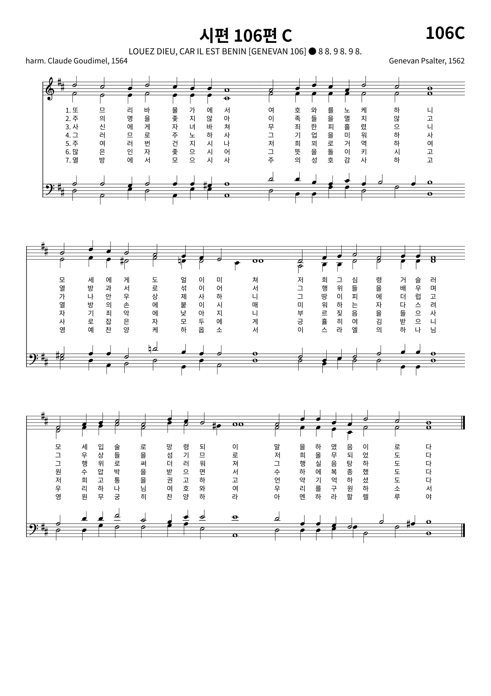

Psalm 106C
LOUEZ DIEU, CAR IL EST BENIN [GENEVAN 106] · 8 8. 9 8. 9 8.
English title: Oh, Thank the LORD, Bring Him Your Praise
Tune: Genevan Psalter, 1562 · Harmony: Claude Goudimel, 1564 · Lyrics: Korean adaptation of Psalm 106 from the Korean Revised Version (AI draft adaptation · not yet theologically reviewed) · 7 stanzas
Psalm 106 is divided into 3 tunes: A B C · This tune contains stanzas 13–19 of the Psalm 106 lyrics.
Score PDF MusicXML (for printing) MusicXML (for accompaniment, with prelude and repeats) Read Psalm 106 (Korean Revised Version)
Score
← Psalm 106B ListAccompaniment (in preparation)Psalm 107A →
Lyrics (Korean)
Stanza 1
또 므리바 물가에서
여호와를 노케 하니
모세에게도 얼이 미쳐
저희 그 심령 거슬러
모세 입술로 망령되이
말을 하였음이로다
또 므리바 물가에서
여호와를 노케 하니
모세에게도 얼이 미쳐
저희 그 심령 거슬러
모세 입술로 망령되이
말을 하였음이로다
Stanza 2
주의 명을 좇지 않아
이족들을 멸치 않고
열방과 서로 섞이어서
그 행위들을 배우며
그 우상들을 섬기므로
저희 올무 되었도다
주의 명을 좇지 않아
이족들을 멸치 않고
열방과 서로 섞이어서
그 행위들을 배우며
그 우상들을 섬기므로
저희 올무 되었도다
Stanza 3
사신에게 자녀 바쳐
무죄한 피 흘렸으니
가나안 우상 제사하니
그 땅이 피에 더럽고
그 행위로써 더러워져
그 행실 음탕하도다
사신에게 자녀 바쳐
무죄한 피 흘렸으니
가나안 우상 제사하니
그 땅이 피에 더럽고
그 행위로써 더러워져
그 행실 음탕하도다
Stanza 4
그러므로 주 노하사
그 기업을 미워하사
열방의 손에 붙이시매
미워하는 자 다스려
원수 압박을 받으면서
수하에 복종했도다
그러므로 주 노하사
그 기업을 미워하사
열방의 손에 붙이시매
미워하는 자 다스려
원수 압박을 받으면서
수하에 복종했도다
Stanza 5
주 여러 번 건지시나
저희 꾀로 거역하여
자기 죄악에 낮아지니
부르짖음을 들으사
저희 고통을 권고하고
언약 기억하셨도다
주 여러 번 건지시나
저희 꾀로 거역하여
자기 죄악에 낮아지니
부르짖음을 들으사
저희 고통을 권고하고
언약 기억하셨도다
Stanza 6
많은 인자 좇으시어
그 뜻을 돌이키시고
사로잡은 자 모두에게
긍휼히 여김 받으니
우리 하나님 여호와여
우리를 구원하소서
많은 인자 좇으시어
그 뜻을 돌이키시고
사로잡은 자 모두에게
긍휼히 여김 받으니
우리 하나님 여호와여
우리를 구원하소서
Stanza 7
열방에서 모으시사
주의 성호 감사하고
영예 찬양케 하옵소서
이스라엘의 하나님
영원 무궁히 찬양하라
아멘 하라 할렐루야
열방에서 모으시사
주의 성호 감사하고
영예 찬양케 하옵소서
이스라엘의 하나님
영원 무궁히 찬양하라
아멘 하라 할렐루야